Dokumen Fungsional (Functional Document / FD) ini adalah acuan tunggal yang menjelaskan apa yang dilakukan sistem Odoo 19 untuk Levi's Indonesia, siapa yang melakukannya, dan bagaimana setiap proses berdampak pada buku besar (General Ledger).
Cakupan dokumen:
Panduan langkah-demi-langkah beserta tangkapan layar disajikan terpisah pada Manual Guide — Levi's / EBR Odoo 19. FD menjawab "apa dan mengapa"; Manual Guide menjawab "bagaimana caranya".
| Entitas / Objek | Keterangan |
|---|---|
| PT Era Busana Retailindo (EBR) | Entitas pemilik Chart of Accounts dan pelaporan keuangan. Perusahaan (res.company) tunggal di dalam basis data: PT. ERA Busana Retailindo. |
| PT Sinar Eka Selaras (SES) | Entitas operasional toko. Muncul di sistem sebagai penamaan Operating Unit toko: OLS SES - <NAMA MALL>. |
| Head Office | Satu Operating Unit: EBR - HEAD OFFICE. Menjadi OU bawaan untuk transaksi non-toko (pembelian kantor pusat, aset, dsb.). |
| Toko / Outlet | 20 Operating Unit aktif, masing-masing memiliki: 1 warehouse, 1 jurnal pembelian, 1 jurnal kas dengan akun kas 1102… tersendiri, dan 1 konfigurasi Point of Sale. |
| Distribution Center (DC) | Gudang pusat. Menjadi titik penerimaan barang dagangan (Trade) dan asal pengiriman ke toko. |
Narasi menggunakan Bahasa Indonesia. Istilah antarmuka Odoo dipertahankan dalam Bahasa Inggris agar sama persis dengan yang tampil di layar — misalnya Vendor Bill, bukan "Faktur Pemasok". Padanan istilah:
| Istilah di Layar (EN) | Padanan Indonesia | Makna |
|---|---|---|
| Purchase Order (PO) | Pesanan Pembelian | Dokumen pemesanan barang/jasa ke vendor. |
| Goods Receipt (GR) / Receipt | Penerimaan Barang | Dokumen serah-terima barang fisik dari vendor. |
| Vendor Bill | Faktur Pembelian / Tagihan Vendor | Tagihan resmi dari vendor yang menimbulkan hutang. |
| GR/IR Clearing | Akun Antara Terima–Tagih | Goods Received, Not Invoiced — barang sudah diterima, faktur belum masuk. |
| Journal Entry | Jurnal / Entri Buku Besar | Baris pencatatan Debit–Kredit di GL. |
| Trade / Non-Trade | Dagangan / Non-Dagangan | Pemisahan pembelian barang dagangan vs operasional. |
| Operating Unit (OU) | Unit Operasi | Dimensi analitik: Head Office atau salah satu toko. |
| Scrap | Penghapusan Stok | Barang rusak/hilang dikeluarkan dari persediaan. |
| Cycle Count | Stok Opname Berkala | Perhitungan fisik sebagian stok secara terjadwal. |
| Fixed Asset | Aktiva Tetap | Aset berumur panjang yang disusutkan. |
| Depreciation | Depresiasi / Penyusutan | Pembebanan nilai aset secara berkala. |
| Revaluation | Revaluasi | Penyesuaian nilai aset ke nilai wajar (PSAK 16 / IAS 16). |
| Credit Note | Nota Kredit | Pengurang tagihan — dipakai pada retur pembelian. |
| Withholding Tax | PPh Potong-Pungut | Pajak yang dipotong dari pembayaran ke vendor. |
| Bukti Potong (Bupot) | — | Bukti pemotongan PPh yang diserahkan ke vendor & DJP. |
| Trial Balance | Neraca Saldo | Ringkasan saldo seluruh akun. |
| Aged Payable / Receivable | Umur Hutang / Piutang | Pengelompokan saldo berdasarkan umur. |
Solusi Levi's terdiri dari empat lapisan. (1) Data operasional toko lahir di sistem EBR/SAP dan
di-export sebagai berkas "X" (X101, X24DN, X70D, dst.). (2) Lapisan
adapter custom_retail_import menarik berkas tersebut dan mengubahnya menjadi
record Odoo. (3) Odoo Core mencatat produk, POS, stok, dan jurnal. (4) Lapisan
lokalisasi Levi's menyisipkan aturan bisnis khas EBR — Trade/Non-Trade, GR/IR, Operating Unit,
COGS periodik — sebelum akhirnya menghasilkan laporan dan dokumen PDF.
custom_retail_import sengaja tidak bergantung pada modul Point of Sale; perilaku POS diletakkan pada modul jembatan custom_retail_import_pos yang ter-install otomatis.Modul bawaan Odoo 19 Community yang menjadi fondasi dan disentuh oleh lapisan kustom:
| Modul | Menu Utama | Peran dalam Solusi Levi's |
|---|---|---|
account | Invoicing | Buku besar, Chart of Accounts, Vendor Bill, Customer Invoice, pembayaran, rekonsiliasi. Fondasi seluruh dampak akuntansi. |
purchase + purchase_stock | Purchase | RFQ → Purchase Order → penerimaan. Diperluas dengan Purchase Type Trade/Non-Trade dan penomoran terpisah. |
stock + stock_account | Inventory | Warehouse, lokasi, Receipt/Delivery, Lot/Serial, valuasi persediaan. Diperluas dengan blokir over-receipt dan jurnal Goods Receipt kustom. |
point_of_sale | Point of Sale | Sesi POS, order, metode pembayaran, jurnal penutup sesi. Menjadi target replay data penjualan toko dari X24DN. |
product | Inventory ▸ Products | Master produk & varian. Katalog Levi's berukuran besar: ± 32.000 template, ratusan ribu varian (atribut Size × Inseam). |
mail | — | Chatter, aktivitas, dan jejak perubahan pada dokumen. |
queue_job (OCA) | Job Queue | Eksekusi impor besar secara asinkron (mis. X101 ± 160.000 varian). Kanal: root.retail_import. |
29 modul kustom terpasang. Dikelompokkan menurut fungsinya:
| Modul | Versi | Fungsi |
|---|---|---|
| A. Lokalisasi Khusus Levi's | ||
custom_levis_localization | 19.0.1.18.0 | Modul inti. 14 fitur: Trade/Non-Trade, GR/IR, Operating Unit, Scrap Batch, COGS Periodik, Inventory Reconciliation, MDR/BIN kartu, Payment Voucher & Receipt, kontrol over-receipt, HS Code, master bank Indonesia. |
custom_levis_asset_accounts | 19.0.2.0.0 | Data seed 6 kategori aktiva tetap EBR + akun revaluasi PSAK 16. |
| B. Integrasi Data Toko | ||
custom_retail_import | 19.0.0.16.0 | Adapter berkas EBR/SAP (X101, X24DN, X70D, X31, X48, X20, TB, GL). Tiga transport: upload manual, SFTP feed, mailbox IMAP. |
custom_retail_import_pos | 19.0.0.4.0 | Jembatan POS (auto-install). Memaksa angka net/pajak/diskon mengikuti berkas sumber persis, menghilangkan selisih pembulatan. |
custom_product_barcode | 19.0.0.1.0 | Satu varian boleh memiliki banyak GTIN/barcode. Wajib untuk pencocokan SKU dari berkas X. |
| C. Akuntansi & Pelaporan | ||
custom_accounting_full | 19.0.0.3.1 | Chart of Accounts PSAK, konsolidasi, dimensi cabang, blokir referensi Vendor Bill ganda. |
custom_accounting_reports | 19.0.0.3.0 | Mesin laporan dinamis: Trial Balance, GL, Balance Sheet, P&L, Cash Flow, Aged Payable/Receivable, Kartu Utang/Piutang, GL Analysis, dan 17 Laporan Pajak. |
custom_accounting_asset | 19.0.0.4.0 | Aktiva tetap: registrasi, depresiasi garis lurus, revaluasi, pelepasan, Asset Register. |
custom_accounting_recurring | — | Jurnal berulang (recurring journal). |
custom_bank_import | — | Impor rekening koran bank untuk rekonsiliasi. |
| D. Pengadaan | ||
custom_po_return | 19.0.0.1.0 | Retur pembelian (RTV) berbasis kuantitas dengan mesin alokasi FIFO lintas PO/GR, serta Credit Note per faktur asal. |
custom_approval_engine | 19.0.0.1.0 | Matriks otorisasi bertingkat, delegasi, out-of-office, eskalasi SLA. Dipakai untuk persetujuan PO. |
| E. Perpajakan & Kepatuhan | ||
custom_tax_id | 19.0.0.2.1 | PPh potong-pungut: 107 kode objek pajak EBR, deteksi otomatis saat Bill di-post, aturan tarif (PPh 23 naik 2%→4% tanpa NPWP, PPh 26 untuk vendor asing). |
custom_coretax | 19.0.0.3.0 | Coretax DJP: register NSFP, e-Faktur XML, penyimpanan Sertel. |
custom_coretax_bupot | 19.0.0.1.0 | Bukti Potong Unifikasi (PPh 22/23/4(2)/15/26) + export XML sesuai skema Coretax. |
custom_pdp_core, custom_pdp_audit, custom_pdp_consent | — | Kepatuhan UU 27/2022 (PDP). custom_pdp_audit menulis audit log yang di-hash chain (SHA256, append-only) untuk setiap aksi akuntansi. |
l10n_erajaya | 19.0.1.0.0 | Template Chart of Accounts EBR: CoA 10-digit Indonesia + set pajak PPN/PPh lengkap. |
| F. Gudang (WMS) | ||
custom_wms_putaway | 19.0.0.1.0 | Mesin putaway bertingkat untuk DC. |
custom_wms_cycle_count | 19.0.0.1.0 | Stok opname berkala berbasis rencana + alur persetujuan selisih. |
custom_barcode | — | Pemindaian barcode untuk operasi gudang. |
| G. Pendukung Platform | ||
custom_core | 19.0.0.1.0 | Fondasi: mixin bersama dan kategori hak akses platform. |
custom_pos_id | 19.0.0.1.0 | Lokalisasi POS Indonesia: QRIS, pembulatan rupiah, e-receipt. |
custom_home_console, custom_documents, custom_sign, custom_helpdesk, custom_spreadsheet, custom_studio_lite, custom_whatsapp, custom_ai_bridge, custom_adapter_framework | — | Modul platform tambahan (konsol beranda, manajemen dokumen, tanda tangan digital, helpdesk, spreadsheet, kustomisasi ringan, notifikasi WhatsApp, jembatan AI, kerangka adapter). |
custom_levis_localization — modul ini menumpang pada grup standar Odoo.| Peran | Grup Akses Odoo | Menu yang Dapat Diakses | Wewenang Utama |
|---|---|---|---|
| TOKOStore Staff / Kasir | Point of Sale / User | Point of Sale | Membuka & menutup sesi POS, mencatat penjualan. Catatan: pada model operasi Levi's, penjualan direkam di sistem EBR dan masuk ke Odoo lewat impor — bukan diketik ulang. |
| TOKOStore Supervisor | Point of Sale / Manager | Point of Sale ▸ Orders / Sessions / Reporting | Menutup sesi, meninjau order, melihat laporan penjualan toko. |
| GUDANGWarehouse Staff | Inventory / User | Inventory ▸ Overview / Transfers / Products | Menerima barang (Receipt), memvalidasi transfer, membuat Scrap Batch (tidak boleh menghapus). |
| GUDANGWarehouse Manager | Inventory / Manager | Inventory (penuh) + Inventory ▸ Operations ▸ Scrap Batches | Validasi Scrap Batch, menyetujui selisih Cycle Count, konfigurasi warehouse & lokasi. Akses baca ke Inventory Reconciliation & Periodic COGS. |
| BELIPurchasing Officer | Purchase / User | Purchase ▸ Orders, Purchase ▸ Orders ▸ PO Returns | Membuat RFQ & PO (memilih Trade/Non-Trade), membuat PO Return. Akses baca ke peta akun Trade/Non-Trade. |
| BELIPurchasing Manager | Purchase / Manager + Approver | Purchase (penuh) + Approvals | Menyetujui PO sesuai matriks otorisasi, mengelola vendor & harga. |
| FINANCEAP Officer | Invoicing / Billing | Invoicing ▸ Vendors | Membuat & posting Vendor Bill, Register Payment (termasuk Admin Fee & Card BIN), mencetak Payment Voucher. Akses penuh ke baris biaya administrasi. |
| FINANCEAccountant / GL | Invoicing / Billing | Invoicing ▸ Accounting, Invoicing ▸ Reporting | Jurnal manual, rekonsiliasi, menjalankan laporan. |
| FINANCEFinance Manager | Invoicing / Administrator | Invoicing (penuh), termasuk Invoicing ▸ Accounting ▸ Inventory Reconciliation dan ▸ Periodic COGS | Akses eksklusif untuk membuat/mengubah Inventory Reconciliation, Periodic COGS, Card BIN/MDR, dan peta akun Trade/Non-Trade. Menetapkan Lock Date. |
| PAJAKTax Officer | Invoicing / Billing + Coretax | Invoicing ▸ Pajak Indonesia, Invoicing ▸ Reporting ▸ Reports ▸ Laporan Pajak, Invoicing ▸ Bupot Unifikasi | Mengelola Withholding Lines & Bukti Potong, NSFP, e-Faktur, Faktur Pengganti, Pre-Export Validation, dan seluruh laporan pajak. |
| FINANCEAsset Officer | Asset User / Asset Manager | Invoicing ▸ Assets | Registrasi aset, konfirmasi, posting depresiasi, revaluasi, pelepasan, cetak Asset Register. Asset Manager diperlukan untuk mengubah konfigurasi Groups & Locations. |
| ITOps / Data Admin | Retail Import / Manager | Retail Import (termasuk ▸ Configuration) | Menjalankan impor, meninjau log, mengelola Import Profiles, Feeds, dan Mailboxes. Grup Retail Import / User hanya bisa membaca konfigurasi dan menjalankan wizard impor. |
| ITSystem Administrator | Settings / Technical Features | Settings ▸ Technical | System Parameters (feature flags), Scheduled Actions, manajemen pengguna & grup akses. |
Parameter sistem seperti retail_import.x24_post_enabled dan
custom_levis_localization.suppress_gr_journal mengubah perilaku posting jurnal.
Karena itu, akses ke Settings ▸ Technical ▸ System Parameters harus dibatasi
pada System Administrator, dan setiap perubahan wajib melalui persetujuan Finance Manager.
EBR menjalankan satu perusahaan legal tetapi 21 pusat biaya operasional. Odoo Community tidak
memiliki fitur Operating Unit bawaan, sehingga solusi ini mengimplementasikannya sebagai
Analytic Plan bernama Operating Unit. Setiap toko dan Head Office adalah satu
analytic account di dalam plan tersebut.
| Dokumen | Sumber OU | Field yang diisi |
|---|---|---|
| Purchase Order Line | Warehouse pada PO → l10n_ou_analytic_id | analytic_distribution (digabung, tidak menimpa distribusi lain) |
| Jurnal Goods Receipt | Warehouse pada Receipt | account.move.line.l10n_ou_analytic_id |
| Vendor Bill | Diturunkan dari PO; jika tanpa PO, dari Head Office | account.move.l10n_ou_analytic_id |
| Jurnal penutup POS | Warehouse dari pos.config toko | Baris penjualan, PPN, dan piutang — semuanya distempel |
| Payment | Diisi manual atau diturunkan dari tagihan yang dibayar | account.payment.register.l10n_ou_analytic_id |
Selain dimensi analitik, tiap toko memiliki jurnal fisik tersendiri agar rekonsiliasi kas dapat dilakukan per outlet:
Pembelian - OLS SES - <MALL> (20 jurnal) + Pembelian - EBR - HEAD OFFICE.Cash - OLS SES - <MALL>, masing-masing dengan akun kas 1102… tersendiri, sehingga saldo kas per toko langsung terbaca di Trial Balance.Karena setiap baris jurnal membawa OU, laporan GL Analysis dapat disajikan sebagai pivot per Operating Unit, dan Periodic COGS dihitung per kombinasi (Operating Unit × Kategori Produk) — bukan hanya total perusahaan.
Ini adalah alur dengan volume terbesar. Penjualan tidak diketik di Odoo; penjualan terjadi di
sistem kasir EBR, lalu direplay ke Odoo sebagai pos.order berikut jurnalnya. Tujuannya
agar buku besar Odoo persis sama dengan angka sumber EBR — selisih Rp 0.
| Berkas | Isi | Menjadi apa di Odoo |
|---|---|---|
| X101 | Material Master (SKU, kategori, harga, GTIN) | product.template + product.product, kategori 3 tingkat, atribut Size & Inseam, barcode alternatif. |
| X24DN | Detail penjualan retail per baris transaksi | pos.order + pos.order.line. Sumber kebenaran untuk pajak, diskon, dan retur. |
| X70D | Detail alat bayar (tender) | Jurnal RIREC — memindahkan saldo dari POS Suspense Clearing ke Bank/Piutang Kartu, lalu auto-reconcile. |
| X31 | Jurnal diskon | Jurnal RIADJ — reklasifikasi diskon. (Alternatif dari reklas diskon internal X24DN — lihat peringatan di bawah.) |
| X48 | Retur penjualan | pos.order bertipe refund. |
| X20 | Saldo stok awal | Penyesuaian persediaan awal. Sekali jalan, dikunci oleh penanda levis.x20_opening_stock_applied. |
| TB & GL | Neraca Saldo & Buku Besar EBR | Saldo awal dan detail GL periode berjalan. |
| Mekanisme | Penjelasan |
|---|---|
| Idempotensi | Setiap berkas di-hash SHA256. Berkas yang sama tidak akan pernah diposting dua kali, meskipun tidak sengaja diunggah ulang. |
| Dry-run / Preview | Wizard impor menampilkan 20 baris pertama hasil pemetaan kolom sebelum data ditulis — untuk memverifikasi bahwa format berkas belum berubah. |
Strict Product Modex24_strict_product = 1 | Transaksi yang memuat SKU tidak ada di master X101 akan diparkir sebagai error, bukan dibuatkan produk asal-asalan. Ini mencegah pendapatan bocor ke akun "Gross Sales – Others". |
Decouple Paymentx24_decouple_payment = 1 | Saat X24DN diimpor, pembayaran belum diketahui rinciannya. Maka seluruh nilai penjualan diparkir di akun POS Suspense Clearing. Saat X70D masuk, saldo itu dipindahkan ke Bank / Piutang Kartu yang sebenarnya dan di-reconcile. |
Sesi harian per tokox24_close_sessions = 1 | Dibuat satu pos.session per (toko × hari dagang), lalu ditutup dan jurnalnya di-backdate ke tanggal dagang — bukan tanggal impor. Ini menjaga laporan per periode tetap benar. |
| Angka sumber dipakai apa adanya | Modul jembatan POS memaksa Odoo memakai nilai net, tax, dan discount dari berkas, bukan menghitung ulang. Tanpa ini, pembulatan pajak per-order Odoo vs pemotongan per-baris di X24DN menimbulkan selisih ± Rp 1 per baris (± Rp 7.145 per bulan). |
Parameter retail_import.x24_discount_reclass dan retail_import.x31_post_enabled
bersifat saling eksklusif. Keduanya mereklasifikasi diskon yang sama. Jika keduanya aktif,
Gross Sales akan digelembungkan dua kali. Konfigurasi saat ini:
x24_discount_reclass = 1, x31_post_enabled = 0 — sudah benar.
Ilustrasi: penjualan bruto Rp 111.000 (termasuk PPN 11%), diskon Rp 10.000, dibayar Rp 60.000 tunai dan Rp 51.000 kartu kredit.
| Akun | Operating Unit | Debit | Kredit |
|---|---|---|---|
| POS Suspense Clearing | OLS SES – <MALL> | 111.000 | — |
| Gross Sales – <Kategori> | OLS SES – <MALL> | — | 100.000 |
| PPN Keluaran | OLS SES – <MALL> | — | 11.000 |
| Akun | Operating Unit | Debit | Kredit |
|---|---|---|---|
| Sales Discount – <Kategori> | OLS SES – <MALL> | 10.000 | — |
| Gross Sales – <Kategori> | OLS SES – <MALL> | — | 10.000 |
Karena ditempel pada jurnal penutup toko tersebut di hari dagang tersebut, reklasifikasi ini otomatis membawa Operating Unit dan tanggal yang benar tanpa konfigurasi tambahan.
| Akun | Operating Unit | Debit | Kredit |
|---|---|---|---|
| Cash – OLS SES – <MALL> | OLS SES – <MALL> | 60.000 | — |
| Piutang Kartu Kredit | OLS SES – <MALL> | 51.000 | — |
| POS Suspense Clearing | OLS SES – <MALL> | — | 111.000 |
Setelah kedua berkas terimpor, saldo POS Suspense Clearing = 0. Saldo yang tersisa di akun ini pada akhir periode berarti ada penjualan yang belum ada data alat bayarnya (X70D belum masuk) — ini adalah indikator kontrol utama bagi Accountant.
Alur pembelian barang dagangan Levi's, dari PO sampai pembayaran vendor. Yang membedakannya dari Odoo standar: pemisahan Trade/Non-Trade, blokir over-receipt, dan akun GR/IR Clearing.
| Aturan | Perilaku Sistem |
|---|---|
| Purchase Type wajib dipilih | Field Purchase Type (Trade / Non-Trade) muncul di form PO. Pilihan ini menentukan penomoran, akun hutang, dan akun GR/IR. |
| Penomoran terpisah | Trade: PO/T/EBR/2026/07/xxx · Non-Trade: PO/NT/EBR/2026/07/xxx. Nomor reset bulanan. |
| Blokir over-receipt | Saat Validate Receipt, jika kuantitas diterima melebihi kuantitas dipesan, sistem menolak. Ini mencegah penerimaan liar di luar PO. |
| Baris receipt harus berasal dari PO | Sistem menolak baris pada Receipt yang tidak terkait ke baris PO manapun. |
| Akun hutang otomatis | Baris hutang pada Bill dipetakan ulang sesuai Purchase Type: Trade → Hutang Dagang 2103100001; Non-Trade → Hutang Non-Dagang 2103300001. |
Parameter custom_levis_localization.suppress_gr_journal memilih kebijakan valuasi
persediaan. Konfigurasi saat ini: 0 (Perpetual).
| Nilai | Mode | Perilaku |
|---|---|---|
0 AKTIF | Perpetual | Setiap Goods Receipt langsung membentuk jurnal valuasi: Dr Persediaan / Cr GR/IR Clearing. Persediaan di GL selalu sinkron dengan stok fisik. |
1 | Periodik | Jurnal GR (dan jurnal retur vendor) ditekan — tidak terbentuk. Nilai persediaan di GL disesuaikan secara berkala lewat Inventory Reconciliation. |
| Akun | Operating Unit | Debit | Kredit |
|---|---|---|---|
| Persediaan / Stock Valuation | EBR – HEAD OFFICE | 100.000 | — |
| GR/IR Clearing (Trade) | EBR – HEAD OFFICE | — | 100.000 |
| Akun | Operating Unit | Debit | Kredit |
|---|---|---|---|
| GR/IR Clearing (Trade) | EBR – HEAD OFFICE | 100.000 | — |
| PPN Masukan | EBR – HEAD OFFICE | 11.000 | — |
Hutang Dagang 2103100001 | EBR – HEAD OFFICE | — | 111.000 |
| Akun | Operating Unit | Debit | Kredit |
|---|---|---|---|
| Hutang Dagang | EBR – HEAD OFFICE | 111.000 | — |
| Bank | EBR – HEAD OFFICE | — | 111.000 |
GR/IR (Goods Received / Invoice Received) adalah akun antara yang menjembatani selisih waktu antara barang datang dan faktur datang. Tanpa akun ini, barang yang sudah diterima tetapi fakturnya belum masuk tidak terlihat sebagai kewajiban di neraca.
| Peristiwa | Jurnal yang terbentuk | Saldo GR/IR sesudahnya | Arti bagi Finance |
|---|---|---|---|
| Hari 1 Barang diterima Goods Receipt |
Dr Persediaan 100 Cr GR/IR Clearing 100 |
100 (Kredit) | Barang sudah ada di gudang, faktur belum datang. Inilah Goods Received, Not Invoiced — kewajiban yang riil tapi belum bernomor faktur. |
| Hari 5 Faktur datang Vendor Bill |
Dr GR/IR Clearing 100 Dr PPN Masukan 11 Cr Hutang Dagang 111 |
0 — seimbang | GR/IR kosong kembali. Hutang kini resmi tercatat atas nama vendor. |
| Hari 35 Pembayaran |
Dr Hutang Dagang 111 Cr Bank 111 |
0 | Siklus selesai. |
Tanpa GR/IR, faktur vendor langsung membebani COGS/Beban. Akibatnya barang yang sudah diterima tetapi belum ditagih tidak muncul sebagai kewajiban di neraca — laporan keuangan understated. Saldo GR/IR pada akhir periode = nilai barang yang sudah diterima namun fakturnya belum masuk, dan angka itu wajib dapat dijelaskan saat tutup buku.
Akun GR/IR harus bertipe Current Liability (Liabilitas Lancar), bukan
Payable (Hutang Usaha). Tipe Payable memicu aturan due date Odoo dan
menyebabkan posting Bill gagal atau salah. Ini adalah kesalahan konfigurasi yang pernah terjadi dan
sudah diperbaiki.
| Stream | Akun Hutang | Akun GR/IR | Sumber Konfigurasi |
|---|---|---|---|
| Trade | 2103100001 Hutang Dagang | Per Kategori Produk — field Stock Variation Account | Inventory ▸ Configuration ▸ Product Categories |
| Non-Trade | 2103300001 Hutang Non-Dagang | 2103300008 | Invoicing ▸ Configuration ▸ Trade / Non-Trade Accounts |
Pembelian di luar barang dagangan: ATK, jasa, sewa, perbaikan, konsultan. Perbedaan utama dari alur
Trade: penomoran PO/NT/…, hutang masuk ke Hutang Non-Dagang, biaya langsung ke akun
beban, dan — yang penting — pemotongan PPh dapat terpicu otomatis.
| Akun | Debit | Kredit |
|---|---|---|
| Beban Jasa Profesional | 100.000 | — |
| PPN Masukan | 11.000 | — |
Hutang Non-Dagang 2103300001 | — | 109.000 |
| Hutang PPh 23 | — | 2.000 |
Vendor menerima Rp 109.000; PPh Rp 2.000 disetorkan EBR ke negara, dan vendor menerima Bukti Potong.
Retur barang ke vendor. Tantangannya: satu SKU bisa pernah dibeli lewat beberapa PO berbeda dengan
harga berbeda. Modul custom_po_return menyelesaikannya dengan mesin alokasi FIFO —
pengguna cukup memasukkan produk dan kuantitas, sistem yang menentukan PO/GR/Bill asal dan harganya.
RTV/2026/xxx.| Akun | Debit | Kredit |
|---|---|---|
| Return Picking — barang keluar | ||
| GR/IR Clearing (Trade) | 100.000 | — |
| Persediaan / Stock Valuation | — | 100.000 |
| Vendor Credit Note — tagihan berkurang | ||
| Hutang Dagang | 111.000 | — |
| GR/IR Clearing (Trade) | — | 100.000 |
| PPN Masukan | — | 11.000 |
Odoo standar hanya bisa men-scrap satu produk per dokumen, dan tiap dokumen menghasilkan
satu jurnal valuasi. Bagi Levi's yang menghapus puluhan SKU sekaligus, ini menghasilkan puluhan jurnal
yang sulit ditelusuri. Scrap Batch (SCRAP/2026/xxx) memungkinkan banyak produk dalam
satu dokumen, dan membentuk satu jurnal valuasi konsolidasi.
| Akun | Debit | Kredit |
|---|---|---|
| Kerugian Scrap (P&L) | xxx | — |
| Persediaan / Stock Valuation | — | xxx |
Akun "Kerugian Scrap" diambil dari parameter custom_levis_localization.scrap_loss_account_code.
Saat ini parameter tersebut masih kosong, sehingga validasi Scrap Batch akan gagal.
Lihat Bab 9, item #2.
Stok opname berkala berbasis rencana (per zona / kategori / frekuensi). Setiap sesi menghasilkan perbandingan hitungan fisik vs sistem. Selisih tidak langsung menyesuaikan stok — harus melalui Adjustment yang disetujui Warehouse Manager, sehingga tercipta jejak audit.
| Asset Group | Keterangan |
|---|---|
| Land (Tanah) | Tidak disusutkan. |
| Building & Improvements | Bangunan dan renovasi outlet. |
| Vehicles (Kendaraan) | ⚠ Belum memiliki akun Akumulasi Depresiasi — posting depresiasi akan gagal. Lihat Bab 9, item #4. |
| Office & Outlet Equipment | Peralatan kantor dan toko. |
| Machinery (Mesin) | — |
| Furniture & Fixtures | Perabot dan display toko. |
| Akun | Debit | Kredit |
|---|---|---|
| Depresiasi bulanan (otomatis via cron) | ||
| Beban Depresiasi | xxx | — |
| Akumulasi Depresiasi | — | xxx |
| Revaluasi — surplus (nilai wajar > nilai buku) | ||
| Aset (nilai perolehan) | xxx | — |
Surplus Revaluasi — OCI 3005200004 | — | xxx |
| Revaluasi — rugi (nilai wajar < nilai buku) | ||
Rugi Revaluasi — P&L 7706000000 | xxx | — |
| Aset (nilai perolehan) | — | xxx |
Akun lain yang di-seed: Pendapatan Revaluasi (P&L) 8300000004, Saldo Laba 3006100001.
Saat Vendor Bill di-post, sistem memeriksa vendor dan produk terhadap 107 kode objek pajak EBR yang sudah dimuat, lalu menerapkan aturan:
| Kondisi Vendor | Jenis PPh | Tarif yang Diterapkan |
|---|---|---|
| Dalam negeri, ber-NPWP | PPh 23 | Tarif normal (mis. 2%) |
| Dalam negeri, tanpa NPWP | PPh 23 | Naik 2× menjadi 4% — otomatis |
| Luar negeri | PPh 26 | 20%, atau tarif tax treaty / DGT bila tersedia |
| Objek final | PPh 4(2) | Sesuai kode objek |
Setiap pemotongan menghasilkan Withholding Line dan draft Bukti Potong yang siap dilengkapi Tax Officer.
| Jenis | Jumlah Kode | Catatan |
|---|---|---|
| PPh 23 | 70 | — |
| PPh 26 | 26 | Termasuk baris tax treaty/DGT dengan tarif fleksibel (diisi per transaksi). |
| PPh 4(2) | 10 | Final. |
| PPh 21 | 1 | Tarif fleksibel. |
| Total | 107 | PPh 22 dan PPh 15 belum dimuat — lihat Bab 10. |
Data penjualan toko diimpor lebih dulu daripada data pembelian tercatat di Odoo. Akibatnya,
banyak barang terjual saat harga pokoknya belum ada di sistem — Odoo menilai barang itu
berbiaya nol. Odoo 19 juga tidak lagi memiliki mekanisme FIFO vacuum yang dulu
memperbaiki nilai ini secara retroaktif. Karena itu COGS dihitung secara periodik lewat
dokumen COGS/2026/xxx, per kombinasi (Operating Unit × Kategori Produk).
| Akun | Debit | Kredit |
|---|---|---|
| Harga Pokok Penjualan (COGS) — per kategori | xxx | — |
| Persediaan / Stock Valuation | — | xxx |
Field zero_cost_qty pada dokumen COGS Run menunjukkan kuantitas yang masih berbiaya nol — angka ini harus diinvestigasi sebelum periode ditutup.
Membandingkan saldo GL akun persediaan dengan nilai stok riil per akun valuasi, lalu membentuk jurnal penyesuaian ke akun Stock Variation. Wajib dijalankan bila mode Periodik aktif; disarankan tetap dijalankan sebagai kontrol meskipun mode Perpetual aktif.
Cron "Levi's: Periodic Inventory Reconciliation (draft)" berjalan bulanan dan hanya membuat dokumen draft — tidak pernah memposting. Saat ini nonaktif; aktifkan bila ingin dokumen disiapkan otomatis setiap awal bulan.
Warna pada diagram: biru = status awal · kuning = status antara · hijau = status akhir yang sehat · merah = pembatalan.
Modul inti. Berisi 14 fitur yang seluruhnya khas kebutuhan EBR:
| # | Fitur | Menu / Lokasi | Ringkasan |
|---|---|---|---|
| 1 | HS Code pada produk | Form Produk | Field HS Code untuk keperluan kepabeanan. |
| 2 | Indeks katalog | — | Indeks database tambahan agar katalog ratusan ribu varian tetap responsif. |
| 3 | Kontrol over-receipt | Receipt ▸ Validate | Menolak penerimaan melebihi kuantitas PO. |
| 4 | Baris receipt wajib dari PO | Receipt | Menolak baris yang tidak terkait PO. |
| 5 | Jurnal Goods Receipt | Otomatis | Mode perpetual/periodik via parameter suppress_gr_journal. |
| 6 | Inventory Reconciliation | Invoicing ▸ Accounting ▸ Inventory Reconciliation | Menyelaraskan saldo GL persediaan dengan nilai stok. Dok: INVREC/2026/xxx. |
| 7 | Trade / Non-Trade | Form PO + Invoicing ▸ Configuration ▸ Trade / Non-Trade Accounts | Pemisahan stream pembelian: penomoran, akun hutang, akun GR/IR, akun beban. |
| 8 | Operating Unit | Warehouse & Company | Dimensi analitik per toko; jurnal pembelian & kas per toko. |
| 9 | Payment Voucher & Receipt | Payment ▸ Print | PDF bertanda tangan, dengan nominal terbilang Bahasa Indonesia. |
| 10 | Journal Billing PDF | Journal Entry ▸ Print | Cetakan jurnal untuk lampiran. |
| 11 | Admin Fee & MDR/BIN | Register Payment + Invoicing ▸ Configuration ▸ Card BIN / MDR | Biaya administrasi multi-COA saat pembayaran; netting MDR kartu berdasarkan rentang BIN. |
| 12 | Scrap Batch | Inventory ▸ Operations ▸ Scrap Batches | Banyak produk, satu jurnal. Dok: SCRAP/2026/xxx. |
| 13 | Periodic COGS | Invoicing ▸ Accounting ▸ Periodic COGS | COGS per (OU × Kategori). Dok: COGS/2026/xxx. |
| 14 | Master Bank Indonesia | Form Bank | Field Kode BI (unik) + 181 bank ter-seed. |
| Transport | Menu | Cara Kerja |
|---|---|---|
| Upload Manual | Retail Import ▸ Import Data | Wizard: pilih Profile → unggah berkas → Preview (dry-run) → Import. |
| SFTP / Local Drop | Retail Import ▸ Configuration ▸ Import Feeds | Cron memindai folder sesuai pola nama berkas, urut prioritas (X24 → X70D → X31). |
| Mailbox IMAP | Retail Import ▸ Configuration ▸ Mailboxes | Menarik lampiran dari INBOX, mencadangkan, lalu menaruhnya di folder drop. |
Record Mailbox harus aktif di SATU basis data saja. Cron berjalan per-DB; dua DB yang memantau INBOX yang sama akan saling menghapus pesan.
| Status | Arti & Tindakan |
|---|---|
| Queued | Menunggu antrean queue_job. |
| Running | Sedang diproses. Berkas besar (X101) dapat memakan ± 30 menit. |
| Imported | Sukses penuh. Tidak ada tindakan. |
| Partial | Sebagian baris gagal. Wajib ditindaklanjuti — buka log, lihat baris ber-status error. |
| Failed | Gagal total. Periksa format berkas dan Column Map pada Profile. |
Sudah diuraikan pada §5.5. Ringkasan teknis:
RTV/2026/xxx
Seluruh laporan berbagi satu mesin (custom.report.engine) dan pola yang sama:
wizard parameter → View (layar) / Print PDF / Export Excel.
| Kelompok | Laporan |
|---|---|
| Laporan Keuangan Inti | Trial Balance · General Ledger · Balance Sheet · Profit & Loss · Cash Flow · GL Analysis (pivot) · Day Book · Cash Book · Bank Book · Journal Audit |
| Hutang & Piutang | Aged Payable · Aged Receivable · Partner Ledger · Kartu Utang · Kartu Piutang · Uang Muka / DP |
| Laporan Pajak 17 laporan | Tax Report (PPN/PPh) · Rekap Faktur Pajak · Rekap Bukti Potong PPh · SPT Masa PPN 1111 · Rekap PPh Pemotongan · Monitoring NSFP · Data Quality NPWP/NIK · Laporan DPP Nilai Lain · Daftar Faktur Pengganti · Ekualisasi Omzet (PPN vs GL) · Ekualisasi Biaya vs Objek PPh · Monitoring Submission Coretax · Usage Meter Pajakku · Rekonsiliasi PPh · Monitoring Angsuran PPh 25 · Jejak Audit Pajak |
Menu: Invoicing ▸ Reporting ▸ Reports · Laporan pajak di submenu … ▸ Laporan Pajak
Hak akses: Custom Reports / User dan Custom Reports / Administrator.
| Modul | Menu | Fungsi |
|---|---|---|
custom_tax_id | Invoicing ▸ Pajak Indonesia | Withholding Rules · PPh Categories · Withholding Lines · Issue Faktur Pengganti · Pre-Export Validation. |
custom_coretax | Custom ▸ Coretax | Bukti Potong · Faktur Pajak Belum Lengkap · NSFP · e-Faktur XML. |
custom_coretax_bupot | Invoicing ▸ Bupot Unifikasi | Bukti Potong Unifikasi + export XML skema Coretax DJP. |
custom_pdp_audit | — | Audit log append-only ter-hash chain (SHA256) untuk setiap aksi akuntansi. Kepatuhan UU 27/2022. |
| Modul | Fungsi Ringkas |
|---|---|
custom_approval_engine | Matriks otorisasi bertingkat untuk PO. Mendukung delegasi, out-of-office, dan eskalasi SLA. Menu: Approvals. |
custom_wms_putaway | Aturan putaway bertingkat untuk DC — menentukan lokasi simpan otomatis saat barang masuk. |
custom_wms_cycle_count | Rencana & sesi stok opname berkala, dengan alur persetujuan selisih. |
custom_product_barcode | Banyak GTIN per varian + resolver barcode yang dipakai seluruh pencocokan SKU dari berkas X. |
custom_pos_id | QRIS, pembulatan rupiah, e-receipt WhatsApp/SMS. |
custom_accounting_full | CoA PSAK, konsolidasi, dimensi cabang, blokir referensi Vendor Bill ganda (dinaikkan dari peringatan menjadi error). |
prd_levis_begbalSettings ▸ Technical ▸ System Parameters
| Parameter | Nilai | Dampak |
|---|---|---|
| Retail Import — posting | ||
retail_import.x24_post_enabled | 1 | X24DN diposting sebagai POS Order + jurnal. Aktif. |
retail_import.x24_close_sessions | 1 | Sesi POS ditutup per (toko × hari dagang), jurnal di-backdate. |
retail_import.x24_decouple_payment | 1 | Penjualan diparkir di POS Suspense Clearing; diselesaikan oleh X70D. |
retail_import.x24_discount_reclass | 1 | Diskon direklas dari data X24DN sendiri. |
retail_import.x31_post_enabled | 0 | Nonaktif — benar, karena saling eksklusif dengan baris di atas. |
retail_import.x48_post_enabled | 0 | Retur penjualan X48 belum diposting. Lihat Bab 10. |
retail_import.x24_strict_product | 1 | SKU tak dikenal diparkir sebagai error, tidak dibuatkan produk baru. |
| Retail Import — pemetaan non-merchandise | ||
retail_import.x24_np_category_id | 501 | Kategori produk untuk barang non-dagangan (paperbag, dsb.) → pendapatan masuk Miscellaneous. |
retail_import.x24_np_goods_codes | TS1000382, TS1000418, … | Kode TS… yang sebenarnya barang, bukan jasa (mis. Fodable Cup, Levi's Pin, Patches). |
| Retail Import — teknis | ||
retail_import.queue_channel | root.retail_import | Kanal queue_job untuk impor asinkron. |
retail_import.line_detail_threshold | 20.000 | Ambang batas penyimpanan detail baris. |
retail_import.max_log_lines | 500.000 | Batas jumlah baris log. |
| Lokalisasi Levi's | ||
custom_levis_localization.suppress_gr_journal | 0 | Mode Perpetual — jurnal Goods Receipt terbentuk. |
custom_levis_localization.scrap_loss_account_code | (kosong) | ⚠ Belum diisi — validasi Scrap Batch akan gagal. Lihat Bab 9. |
| Dokumen | Format | Reset |
|---|---|---|
| Purchase Order — Trade | PO/T/EBR/2026/07/xxx | Bulanan |
| Purchase Order — Non-Trade | PO/NT/EBR/2026/07/xxx | Bulanan |
| Vendor Bill — Trade | BILL/T/EBR/2026/07/xxx | Bulanan |
| Vendor Bill — Non-Trade | BILL/NT/EBR/2026/07/xxx | Bulanan |
| Payment | 8282/2026/07/xxx (4 digit terakhir no. rekening) | Bulanan |
| PO Return (RTV) | RTV/2026/xxx | Tahunan |
| Scrap Batch | SCRAP/2026/xxx | Tahunan |
| Periodic COGS | COGS/2026/xxx | Tahunan |
| Inventory Reconciliation | INVREC/2026/xxx | Tahunan |
| Fixed Asset | FA/2026/xxx | Tahunan |
| Bukti Potong Unifikasi | BUP/2026/07/xxx | Bulanan |
| Recurring Journal | REC/2026/xxx | Tahunan |
| Tipe | Jumlah | Keterangan |
|---|---|---|
| Bank | 6 | BCA (masuk), BCA (keluar), BNI, BRI, Mandiri, Bank umum. Pemisahan in/out mengikuti kode EBR. |
| Cash | 22 | Petty Cash + 21 jurnal kas toko (Cash - OLS SES - <MALL>), masing-masing dengan akun kas 1102… sendiri. |
| Purchase | 23 | Pembelian (umum), Pembelian - EBR - HEAD OFFICE, + 21 jurnal pembelian per toko. |
| Sale | 1 | Penjualan. |
| General | 8 | GLJV General Journal · RIADJ Retail Import Adjustments · STJ Inventory Valuation · DEPRE Depreciation · EBRTB EBR TB Load · EXCH Exchange Difference · CABA Cash Basis Taxes · MISC Miscellaneous. |
Settings ▸ Technical ▸ Scheduled Actions
| Nama | Interval | Status | Fungsi |
|---|---|---|---|
| Custom Asset: Post Monthly Depreciation | Harian | Aktif | Memposting baris depresiasi yang jatuh tempo. |
| Retail Import: fetch mailboxes | Per jam | Aktif | Menarik lampiran dari IMAP. Saat ini tidak berefek karena record Mailbox nonaktif. |
| Retail Import: poll feeds | Per jam | Nonaktif | ⚠ Inilah saklar yang mengubah berkas di folder drop menjadi POS Order + jurnal. Harus diaktifkan saat go-live. |
| Levi's: Periodic Inventory Reconciliation (draft) | Bulanan | Nonaktif | Menyiapkan dokumen INVREC berstatus draft. Tidak pernah memposting. |
| # | Item | Prioritas | Tindakan |
|---|---|---|---|
| 1 | GR/IR Clearing untuk stream Trade | TINGGI | Akun GR/IR Trade diambil dari field Stock Variation Account pada Kategori Produk — dan saat ini belum diisi. Akibatnya, Vendor Bill Trade masih membebani COGS/Beban langsung, bukan mengosongkan GR/IR. Perbaiki di: Inventory ▸ Configuration ▸ Product Categories — isi Stock Variation Account; atau isi field GR/IR Account pada baris Trade di Invoicing ▸ Configuration ▸ Trade / Non-Trade Accounts. Ingat: akun harus bertipe Current Liability, bukan Payable. |
| 2 | Akun Kerugian Scrap | TINGGI | Parameter custom_levis_localization.scrap_loss_account_code masih kosong → validasi Scrap Batch gagal.Perbaiki di: Settings ▸ Technical ▸ System Parameters — isi dengan kode akun (bukan ID) beban kerugian persediaan. |
| 3 | Tabel Card BIN & MDR | SEDANG | Model levis.mdr.bin masih kosong (0 baris) → netting MDR kartu tidak dapat berjalan.Isi di: Invoicing ▸ Configuration ▸ Card BIN / MDR — per skema kartu, rentang BIN, bank acquirer, dan persentase/nominal MDR. |
| 4 | Akumulasi Depresiasi — Kendaraan | SEDANG | Grup aset Vehicles tidak memiliki akun Akumulasi Depresiasi karena kode 1205202000 tidak ada di Chart of Accounts. Depresiasi kendaraan akan gagal diposting.Perbaiki: tambahkan akun tersebut ke CoA, lalu petakan di Invoicing ▸ Assets ▸ Configuration ▸ Groups ▸ Vehicles. |
| 5 | Pemetaan COA biaya audit pada Bill | RENDAH | Set akun beban pada produk/kategori terkait. |
| 6 | Aktivasi go-live impor otomatis | GO-LIVE | Aktifkan Scheduled Action "Retail Import: poll feeds" di Settings ▸ Technical ▸ Scheduled Actions. Tanpa ini, berkas yang masuk ke folder drop hanya akan mengendap, tidak diposting. |
| Area | Batasan |
|---|---|
| Retur penjualan (X48) | Parameter x48_post_enabled masih 0. Selain itu, terdapat cacat yang belum diperbaiki: refund X48 di-tender ke metode CASH toko, dan nilai refund mendarat di akun Cash Difference alih-alih mengurangi kas. Harus diperbaiki sebelum diaktifkan. |
| Rekonsiliasi X70T | Belum dapat diverifikasi — berkas contoh dari EBR masih kosong. |
| Export GL EBR | Export GL 2026 dari EBR bersifat satu sisi (tiap baris hanya satu leg, dan <5% membawa Document No). Akibatnya voucher tidak dapat diseimbangkan otomatis. Diperlukan export dua sisi dari pihak EBR. |
| PPh 22 & PPh 15 | Belum termuat dalam 107 kode objek pajak. Perlu ditambahkan bila EBR memiliki transaksi kedua jenis ini. |
| Penjualan berbiaya nol | Penjualan yang terjadi sebelum pembelian tercatat akan tetap bernilai COGS = 0 sampai Periodic COGS dijalankan. Odoo 19 tidak lagi memiliki FIFO vacuum retroaktif. |
| Risiko | Mitigasi |
|---|---|
| Diskon terhitung dua kali | Jangan pernah mengaktifkan x24_discount_reclass dan x31_post_enabled bersamaan. Jadikan ini bagian dari checklist perubahan parameter. |
| Mailbox aktif di lebih dari satu DB | Pastikan record retail.import.mailbox hanya aktif di satu basis data produksi. |
| Perubahan parameter tanpa kontrol | Batasi akses Settings ▸ Technical ▸ System Parameters ke System Administrator; wajibkan persetujuan Finance Manager. |
| Impor ganda | Tertangani otomatis oleh hash SHA256 — berkas identik tidak akan diposting dua kali. Namun berkas dengan isi sama tapi hash berbeda (mis. di-re-save) tetap dapat lolos. Selalu gunakan Preview lebih dulu. |
Current Liability, bukan Payable — tipe Payable memicu aturan due date Odoo dan merusak posting Bill.account.code bersifat company-dependent pada Odoo 19. Membaca kode akun tanpa konteks perusahaan yang benar akan menghasilkan kolom Code kosong pada laporan.bin_range_order pada tabel MDR/BIN tidak aktif di database — Odoo 19 mengabaikan deklarasi _sql_constraints gaya lama secara diam-diam. Validasi rentang BIN harus dilakukan manual saat pengisian.custom_retail_pos_offline disebut dalam paket industri retail dan dokumen FSD sebelumnya, namun modul ini tidak ada di dalam basis kode. Perlu dikonfirmasi: dibangun, atau dikeluarkan dari cakupan.| # | Operating Unit | # | Operating Unit |
|---|---|---|---|
| 1 | EBR - HEAD OFFICE | 12 | OLS SES - MALL OF INDONESIA |
| 2 | OLS SES - AEON BSD CITY | 13 | OLS SES - METROPOLITAN MALL BEKASI |
| 3 | OLS SES - BANDUNG INDAH PLAZA | 14 | OLS SES - PAKUWON MALL SURABAYA |
| 4 | OLS SES - CENTRAL PARK | 15 | OLS SES - PARIS VAN JAVA |
| 5 | OLS SES - GALAXY MALL 3 | 16 | OLS SES - PLAZA SENAYAN |
| 6 | OLS SES - GANDARIA CITY | 17 | OLS SES - PONDOK INDAH MALL 1 |
| 7 | OLS SES - GRAND INDONESIA | 18 | OLS SES - PONDOK INDAH MALL 2 |
| 8 | OLS SES - GRAND METROPOLITAN BEKASI | 19 | OLS SES - SENAYAN CITY |
| 9 | OLS SES - KELAPA GADING MALL | 20 | OLS SES - SUMMARECON MALL BANDUNG |
| 10 | OLS SES - LOTTE SHOPPING AVENUE | 21 | OLS SES - TRANS STUDIO CIBUBUR |
| 11 | OLS SES - TRANS STUDIO MALL BANDUNG | 22 | OLS SES - TUNJUNGAN PLAZA 3 |
Catatan: terdapat pula jurnal untuk PACIFIC PLACE MALL dan PASKAL BANDUNG yang Operating Unit-nya sudah dinonaktifkan (toko tutup / belum aktif).
| Kode | Nama / Fungsi |
|---|---|
2103100001 | Hutang Dagang (Trade Payable) |
2103300001 | Hutang Non-Dagang (Non-Trade Payable) |
2103300008 | GR/IR Clearing — Non-Trade |
| per kategori produk | GR/IR Clearing — Trade (field Stock Variation Account) — belum diisi |
1102… | Kas per toko (satu akun per Operating Unit) |
3005200004 | Surplus Revaluasi — OCI |
7706000000 | Rugi Revaluasi — P&L |
8300000004 | Pendapatan Revaluasi — P&L |
3006100001 | Saldo Laba (Retained Earnings) |
9990000001 / 9990000002 | Selisih pembulatan rupiah POS — untung / rugi |
| Gambar | Judul |
|---|---|
| 1 | Arsitektur solusi Levi's |
| 2 | Peta peran pengguna |
| 3 | Aliran dimensi Operating Unit |
| 4 | Swimlane Retail Sales-to-Cash |
| 5 | Swimlane Procure-to-Pay Trade |
| 6 | Swimlane Procure-to-Pay Non-Trade |
| 7 | Swimlane Retur Pembelian (RTV) |
| 8 | Swimlane operasi gudang |
| 9 | Swimlane siklus hidup aktiva tetap |
| 10 | Swimlane perpajakan |
| 11 | Swimlane penutupan periode |
| 12 | Status dokumen pengadaan & gudang |
| 13 | Status dokumen akuntansi & integrasi |
prd_levis_begbal.